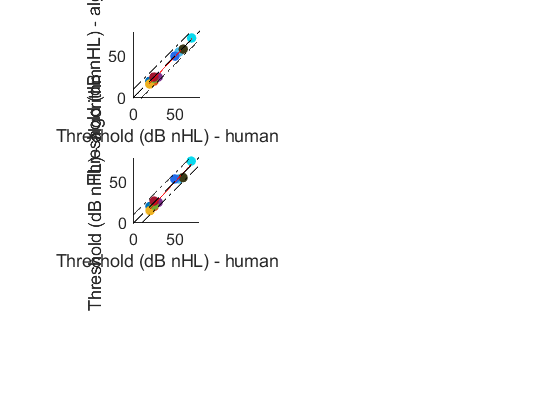
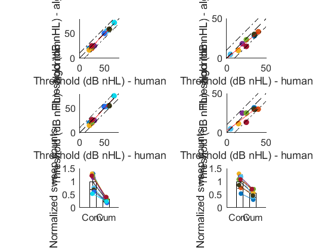

clear;
c= [0 0.4470 0.7410;
0.8500 0.3250 0.0980;
0.9290 0.6940 0.1250;
0.4940 0.1840 0.5560;
0.4660 0.6740 0.1880;
0.3010 0.7450 0.9330;
0.6350 0.0780 0.1840;
0.2330 0.2270 0.0940;
0.1419 0.4218 0.9157;
0.0357 0.8491 0.9340;
0.6787 0.7577 0.7431];
load('.\thres_data_v2.mat')
f_upline=@(x)(x+10);
f_fitline=@(x)(x);
f_downline=@(x)(x-10);
figure(1);
thres_alg_mice=algorithm_mice.algorithmnoFit';
expert_mice_all_mean=(sum(expert_mice_all)-max(expert_mice_all)-min(expert_mice_all))/3;
expert_mice_all_std=std(expert_mice_all);
expert_mice_cum_mean=(sum(expert_mice_cum)-max(expert_mice_cum)-min(expert_mice_cum))/3;
expert_mice_cum_std=std(expert_mice_cum);
[f1,gof1]=lineFit(thres_alg_mice,expert_mice_all_mean);
[f2,gof2]=lineFit(thres_alg_mice,expert_mice_cum_mean);
subplot(3,2,1)
for i = 1:length(thres_alg_mice)
scatter(thres_alg_mice(i),expert_mice_all_mean(i),'marker','.','MarkerEdgeColor',c(i,:),'sizeData',600)
hold on;
end
plot(f1,'r');
plot((0:80),f_upline(0:80),'k-.');
plot((10:90),f_downline(10:90),'k-.');
plot((0:90),f_fitline(0:90),'k--');
xlim([0,80]);
ylim([0,80]);
xlabel('Threshold (dB nHL) - algorithm')
ylabel('Threshold (dB nHL) - human')
legend('off')
daspect([1,1,1])
ylabel('Threshold (dB nHL) - algorithm');
xlabel('Threshold (dB nHL) - human')
set(gca,'tickdir','out','fontname','arial','fontsize',12)
subplot(3,2,3)
for i = 1:length(thres_alg_mice)
scatter(thres_alg_mice(i),expert_mice_cum_mean(i),'marker','.','MarkerEdgeColor',c(i,:),'sizeData',600)
hold on;
end
plot(f2,'r');
plot((0:80),f_upline(0:80),'k-.');
plot((10:90),f_downline(10:90),'k-.');
plot((0:90),f_fitline(0:90),'k--');
xlim([0,80]);
ylim([0,80]);
xlabel('Threshold (dB nHL) - algorithm')
ylabel('Threshold (dB nHL) - human')
legend('off')
daspect([1,1,1])
ylabel('Threshold (dB nHL) - algorithm');
xlabel('Threshold (dB nHL) - human')
set(gca,'tickdir','out','fontname','arial','fontsize',12)

subplot(3,2,2)
fit_dot=[1:5,7:9];
thres_alg_human=algorithm_human.algorithmnoFit';
expert_human_all_mean=(sum(expert_human_all)-max(expert_human_all)-min(expert_human_all))/3;
expert_human_all_std=std(expert_human_all);
expert_human_cum_mean=(sum(expert_human_cum)-max(expert_human_cum)-min(expert_human_cum))/3;
expert_human_cum_std=std(expert_human_cum);
[f3,gof3]=lineFit(thres_alg_human,expert_human_all_mean);
[f4,gof4]=lineFit(thres_alg_human,expert_human_cum_mean);
for i = 1:length(thres_alg_human)
scatter(thres_alg_human(i),expert_human_all_mean(i),'marker','.','MarkerEdgeColor',c(i,:),'sizeData',600)
hold on;
end
plot(f3,'r');
plot((0:50),f_upline(0:50),'k-.');
plot((10:60),f_downline(10:60),'k-.');
plot((0:60),f_fitline(0:60),'k--');
xlim([0,60]);
ylim([0,60]);
xlabel('Threshold (dB nHL) - algorithm')
ylabel('Threshold (dB nHL) - human')
legend('off')
xlim([0,50]);
ylim([0,50]);
daspect([1,1,1])
ylabel('Threshold (dB nHL) - algorithm');
xlabel('Threshold (dB nHL) - human')
set(gca,'tickdir','out','fontname','arial','fontsize',12)
subplot(3,2,4)
for i = 1:length(thres_alg_human)
scatter(thres_alg_human(i),expert_human_cum_mean(i),'marker','.','MarkerEdgeColor',c(i,:),'sizeData',600)
hold on;
end
plot(f4,'r');
plot((0:80),f_upline(0:80),'k-.');
plot((10:90),f_downline(10:90),'k-.');
plot((0:90),f_fitline(0:90),'k--');
xlim([0,60]);
ylim([0,60]);
xlabel('Threshold (dB nHL) - algorithm')
ylabel('Threshold (dB nHL) - human')
legend('off')
xlim([0,50]);
ylim([0,50]);
daspect([1,1,1])
ylabel('Threshold (dB nHL) - algorithm');
xlabel('Threshold (dB nHL) - human')
set(gca,'tickdir','out','fontname','arial','fontsize',12)
subplot(3,2,5)
norm_all_mice=iter_all_mice/mean(iter_all_mice);
norm_cum_mice=iter_cum_mice/mean(iter_all_mice);
randseed=(rand(length(norm_all_mice),2)-0.5)/5;
bar([1,2],[mean(norm_all_mice),mean(norm_cum_mice)],'BarWidth',0.5,'FaceColor','none')
hold on
errorbar([1,2],[mean(norm_all_mice),mean(norm_cum_mice)],[std(norm_all_mice),std(norm_cum_mice)],'k')
for i =1:length(norm_all_mice)
plot([1,2]+randseed(i,:),[norm_all_mice(i),norm_cum_mice(i)],'Color',c(i,:),'LineStyle','-','Marker',".",'MarkerFaceColor',c(i,:),'MarkerEdgeColor',c(i,:),'MarkerSize',20)
end
xlim([0,3])
ylim([0,1.5])
ylabel('Normalized sweep counts')
set(gca,'box','off','xticklabel',["Conv","Cum"],'tickdir','out','fontname','arial','fontsize',12)
daspect([2,1,1])
for i =1:length(norm_all_mice)
reduce_per(i,:)=(norm_all_mice(i)-norm_cum_mice(i))/norm_all_mice(i);
end
disp(sprintf('algorithm skipped a reduction of %0.4f ± %0.4f of nonproductive number of sweeps',mean(reduce_per),std(reduce_per)))
subplot(3,2,6)
norm_all_human=iter_all_human/mean(iter_all_human);
norm_cum_human=iter_cum_human/mean(iter_all_human);
randseed=(rand(length(norm_all_human),2)-0.5)/5;
bar([1,2],[mean(norm_all_human),mean(norm_cum_human)],'BarWidth',0.5,'FaceColor','none')
hold on
errorbar([1,2],[mean(norm_all_human),mean(norm_cum_human)],[std(norm_all_human),std(norm_cum_human)],'k')
for i =1:length(norm_all_human)
plot([1,2]+randseed(i,:),[norm_all_human(i),norm_cum_human(i)],'Color',c(i,:),'LineStyle','-','Marker',".",'MarkerFaceColor',c(i,:),'MarkerEdgeColor',c(i,:),'MarkerSize',20)
end
xlim([0,3])
ylim([0,1.5])
ylabel('Normalized sweep counts')
set(gca,'box','off','xticklabel',["Conv","Cum"],'tickdir','out','fontname','arial','fontsize',12)
daspect([2,1,1])
for i =1:length(norm_all_human)
reduce_per_humam(i,:)=(norm_all_human(i)-norm_cum_human(i))/norm_all_human(i);
end
disp(sprintf('algorithm skipped a reduction of %0.4f ± %0.4f of nonproductive number of sweeps',mean(reduce_per_humam),std(reduce_per_humam)))
algorithm skipped a reduction of 0.6672 ± 0.0498 of nonproductive number of sweeps
algorithm skipped a reduction of 0.4319 ± 0.1248 of nonproductive number of sweeps
